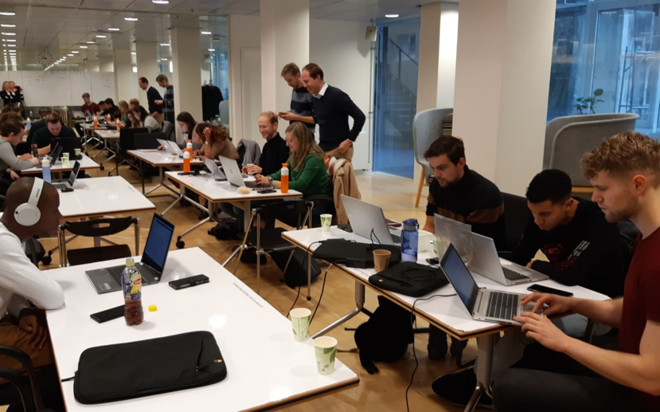
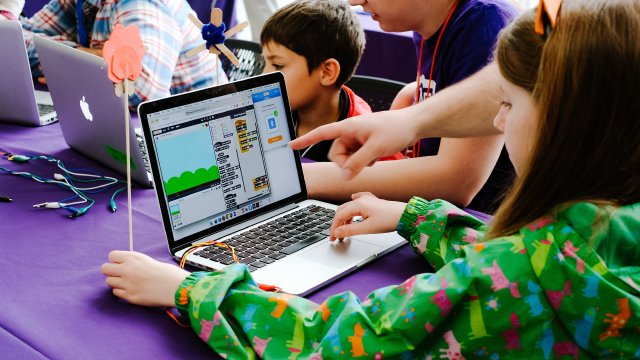

Programmeren
Zou jij graag willen leren Programmeren en je eigen websites of games maken? Kom dan naar de workshop Programmerenen leer door
een profesional de eerst stappen tot het worden van een programmeur.De planning gaat als volgt je begint met een kleine les over hoe het
wekkt en de profesional legt dan de standaard dingen uit zodat je zelf aan de slag kan,Ook zal hij je een paar handige sites en manieren
geven om een mooie website over jezelf te maken. Daarna komt er een andere profesional die je de standaard dingen over het maken van
je eigen game uitlegt,Ook hij zal je een paar hamdige tips en websites geven en dan kun je je eigen game gaan bouwen.
Ook is er een kinder paket daar is alles op een makelijkere manier ingedeeld. De code is al geschreven maar het staat in sleepbare vlaken
die je achter elkaar moeet aansluiten. de work shop duurt ongeveer 3/4 uur maar kan ook langer of korter als dat gewenst is(neem dan even contact op).
De workshop is 10.- per persoon. En hopelijk zien we je daar

